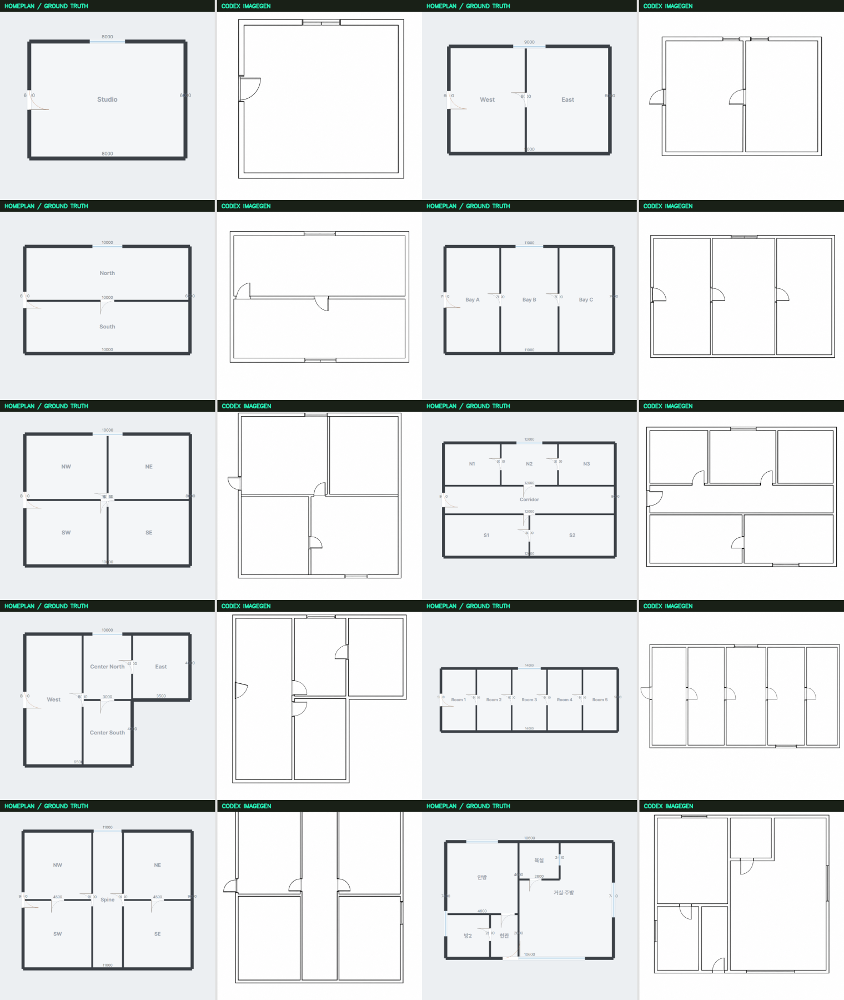

EXPLORATORY BENCHMARK · 10 CASES · ONE GENERATION EACH
구조는 복원했지만,
실측 비율은 흔들렸다.
HomePlan은 정답 Project를 직접 렌더하는 상한선이고, Codex imagegen은 3D top + 양방향 iso 픽셀만 보고 2D를 생성했다. 동일한 입력 조건과 고정 프롬프트를 사용했다.
10/10방 개수 일치
0.918벽 F1
0.874개구부 F1
0.854정합 후 shape IoU
17.8%평균 종횡비 오차

| Case | Rooms T/P | Wall F1 | Opening F1 | Shape IoU | Aspect err. | 반증 |
|---|
| case-01-studio | 1 / 1 | 0.800 | 1.000 | 0.838 | 22.3% | entry and north window preserved |
| case-02-dual-vertical | 2 / 2 | 0.909 | 0.857 | 0.876 | 10.9% | extra north window |
| case-03-dual-horizontal | 2 / 2 | 1.000 | 0.857 | 0.867 | 11.6% | extra south window |
| case-04-three-bays | 3 / 3 | 1.000 | 1.000 | 0.856 | 4.7% | all openings preserved |
| case-05-four-grid | 4 / 4 | 0.769 | 0.889 | 0.885 | 21.5% | extra south window |
| case-06-corridor-six | 6 / 6 | 1.000 | 0.615 | 0.819 | 9.6% | room count preserved but three internal door locations were omitted or moved |
| case-07-l-shape | 4 / 4 | 0.875 | 0.800 | 0.865 | 17.5% | one horizontal-wall door moved to the vertical partition |
| case-08-long-five | 5 / 5 | 0.875 | 0.923 | 0.800 | 34.7% | extra south window |
| case-09-central-spine | 5 / 5 | 1.000 | 0.923 | 0.873 | 21.6% | extra east window |
| case-10-apartment | 5 / 5 | 0.947 | 0.875 | 0.864 | 23.2% | one internal door and the bathroom window omitted |
벽 지표는 외곽 bounding-box 정합 뒤 axis-aligned centerline 허용 오차를 적용한 탐색 지표다. 개구부는 comparison 이미지를 수동 대조했으며 수정은 하지 않았다. 한 사례당 1회 생성이라 분산과 재현성은 측정하지 않는다.